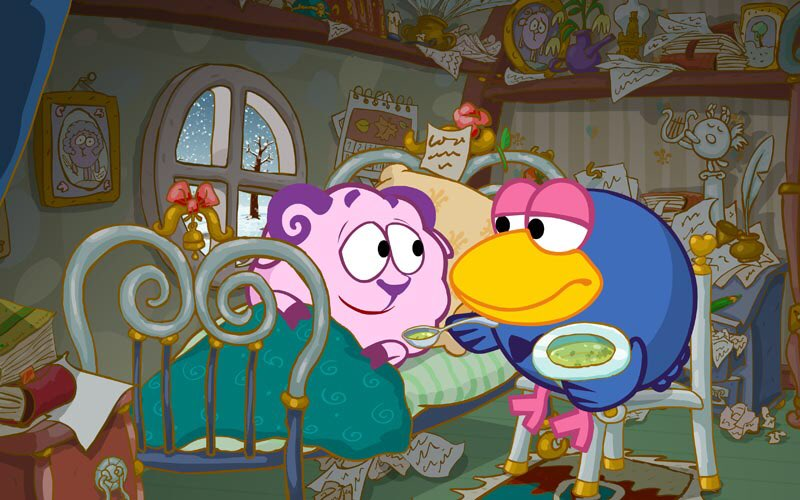

"Иногда случается, что вещи теряют свой смысл..." - так начинается эта серия, самая глубокая по своему содержанию среди всех остальных. Все начинается с того, что Бараш потерял смысл жизни. Он обращается в помощи Кар-Карычу - глубокому мудрому старцу, познавшего жизнь (это можно употребить именно в этой серии). Путем трудных испытаний они так и не достигают Кузинатры - той сферы, дающей смысл. Когда же они оказываются дома, то Бараш уже не торопится в поисках Кузинатры.
Он сказал: "Не надо торопиться... Кузинатра никуда не денется. Смысл этого бульона, чтобы я его ел и набирался сил... Смысл этой кровати, чтобы я на ней спал и отдыхал... Пока этих смыслов вполне достаточно"
Стоит начать с того, что Кар-Карыч - это человек, понявший жизнь. Он дает Барашу во время похода к выдуманной "Кузинатре" понять, что не стоит искать общего смысла. Смысл есть в повседневных мелочах, и не надо заходить никуда далеко. Именно это он и пытался донести Барашу, сделав для него сложное испытание и проведя его по кругу.